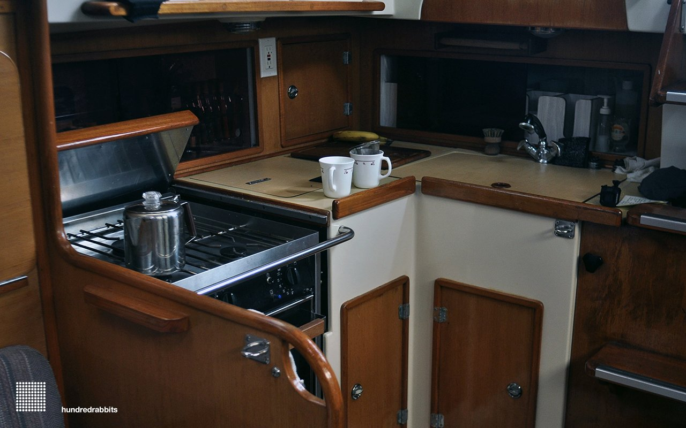

Cooking
- A floating kitchen
- Why is cooking important to us?
- What do we eat?
- Our galley
- Grimgrains
- Why plants?
- Resources
A floating kitchen

Why is cooking important to us?
"The doctor of the future will give no medicine, but will instruct his patient in the care of the human frame in diet and in the cause and prevention of diseases."
Thomas Edison, 1903
Cooking is another creative outlet, not unlike drawing or writing. We find joy in it. It's an activity that we can do together which we believe is essential for well-being.
What do we eat?

Our diet consists solely of plants (legumes, fruits, grains, seeds, vegetables etc). The content of our meals depend on our location, for example, in Nuku Hiva (Marquesas) we had no access to tomatoes, so instead, we used papaya to make bruschetta. We look at the adaption and adoption of local produce as an exercise in creativity. Most processed food will come thickly packaged, and so to limit our waste we tend to avoid them.
Below is a list of rules that we go by, when it comes to choosing what to eat:
1. Eat varied foods. Biodiversity in the diet means less monoculture in the fields.
2. Pay more. Spend more for foods grown or raised less intensively and with more care, eat less.
3. Eat mostly plants. Especially leafy greens. Cook, and if you can, plant a garden.
4. Avoid processed foods. Don’t eat anything your great-great-grandparents wouldn’t recognize as food. Avoid food products with unpronounceable ingredients, aim for less than five in number.
Our galley
Our galley is small, but has enough room for two people to cook. We have a 3 burner gimbled stove, equipped with a large oven. Since Pino has no refrigeration, we go out shopping for fresh food almost everyday. During long passages, we rely on dehydrated goods, root vegetables and dried legumes.
We choose durable(stainless steel, quality wood), multi-functional and simple (unibody, non-electric) tools.
Our kitchen has few tools: 2 forks, 2 bowls, 2 plates, 2 spoons etc.
Grimgrains

Grimgrains is our cooking blog. It showcases our favourite creations, along with hand-drawn illustrations for each ingredient.
We started Grimgrains to teach ourselves how to cook. This blog — which now doubles as a travel diary — helps measure our progress. It's also a way to share what we've learned.
Why plants?
We eat a plant-based diet for health, ethical and environmental reasons.
Appropriately planned plant-based diets are healthful, nutritionally adequate, and may provide health benefits in the prevention and treatment of certain diseases.
Resources
- How not to die by Michael Greger
- On Food And Cooking, Harold McGee
- Should we go vegan?
- The China Study by Colin Campbell
If you enjoy our content...
Support Us On Patreon